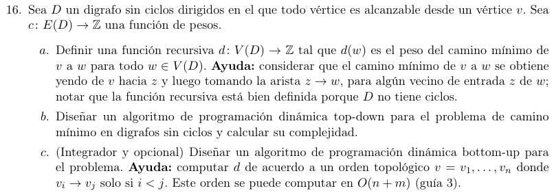

\[d(w) = \begin{cases} 0 & \text{si }w = v \\ \min\limits_{(z \rightarrow w) \in E}\left( d(z) + c(z \rightarrow w) \right) & \text{sino } \end{cases}\]
pred = [[]*n]
para cada (u,v) en E(D): //O(m)
pred[v].add(u)
memo = [null]*n
f rec(w):
si w ≡ v:
ret 0
si memo[w] es null:
memo[w] = min(d(z)+c(z,w) para cada z en pred[w]) //O(n) acotado por estados
return memo[w]
//O(n+m)
ady = lista de adyacencias de E
ord = reverse(dfs(v,E)) //toposort O(n+m)
memo [[null]*n]
memo[v] = 0
para u en ord: //O(n)
para z in ady[u]: //O(d(u))
memo[z] = min(memo[z],memo[u]+c(u,z))
ret memo[w]
//O(n+m)